Sarah J Maas não poderia ter criado uma melhor protagonista. Feyre Archeron é a segunda de três filhas órfãs de mãe, encarregada de ser a provedora da casa após a incapacidade de seu pai. No começo da saga é apenas uma jovem de 19 anos que não sabia sequer ler ou escrever. Após ser introduzida à Corte Noturna, começa a aprender com Rhysand não só isso mas também a controlar o poder dado pelos sete grandes senhores de Prythian.
Em falar nos poderes, Feyre é uma dos raros daemati, seres que conseguem entrar dentro da mente dos outros, sem contar com as asas illyrianas que consegue inovar e um pouco de cada poder das sete cortes: primavera, verão, outono, inverno, dia, amanhecer e noite. Foi nomeada publicamente como a primeira grande senhora da história de Prythian no terceiro livro.
Rhysand
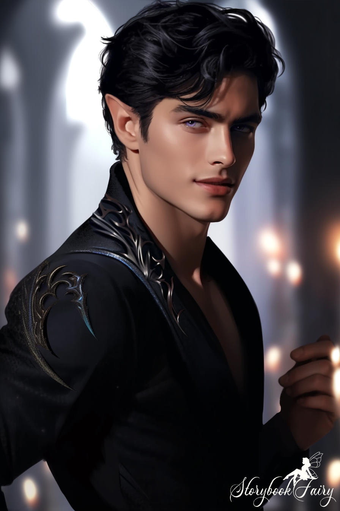
Parceiro de Feyre e Grande Senhor da Corte da Noite e mais poderoso em toda Prythian, é um macho illyriano que cresceu sob os cuidados de sua mãe e em conjunto com Cassian e Azriel, que conheceu nos ringues illyrianos. É daemati e consegue controlar corpos, objetos e lugares apenas com seu vasto poder telecinético. Como todos os livros clássicos, é o tal personagem com cabelos pretos e humor beirado à ironia. Sacrificou-se por 50 anos para proteger o segredo de sua corte e todos os seus amigos, agindo sempre com cautela e sacrificando-se em vez de qualquer outra pessoa. Ele tem tatuagens em ambos os joelhos de montanhas com 3 estrelas no topo, representando que ele se curvará para nada e ninguém além de sua coroa (e posteriormente Feyre).
Tamlin
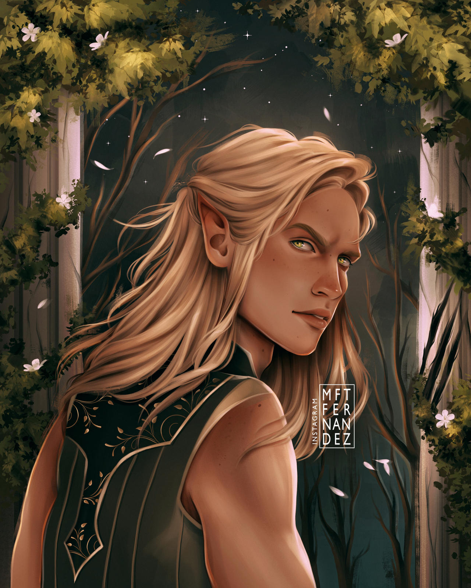
Se apenas conhece esse nome do primeiro livro, sinto dessapontá-lo. Tamlin é o Grande Senhor da Corte da Primavera, ex-noivo de Feyre. De início aparece com uma máscara de ouro incrustada com esmeraldas com formas espirais de folhas que cobriam seu nariz, bochechas e sobrancelhas, fruto da maldição de Amarantha. O seu amor por Feyre no segundo livro fê-lo ir à insanidade apenas para garantir sua segurança, fazendo assim coisas irremediáveis para seu relacionamento com Feyre, como trancá-la em sua casa e vender toda Prythian para reconquistá-la. Sua arrogância desde sua criação afastou toda sua corte e amigos próximos nos posteriores livros, então, não é tão heróico como aparentava no primeiro livro.
Lucien Vanserra
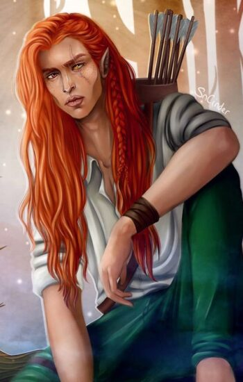
Todo livro tem que ter um personagem que vai sofrer todo o tipo de torturas, e neste universo, o escolhido foi o personagem mais amado de toda a saga. Lucien surge como amigo e emissário de Tamlin e sua corte, e acaba por começar a servir a Corte da Noite no terceiro livro. Foi abusado sexualmente, passou por um relacionamento abusivo, foi torturado, mutilado, tratado como lixo, quase morto por sua família e obrigado a ver sua amada morrer nas mãos de seus irmãos. Contudo, ajudou Feyre no calabouço de Amarantha, apoiou-a mediante aos abusos de Tamlin e acompanhou-a na sua fuga de volta à Corte da Noite, no terceiro livro. É legitimamente herdeiro do Grande Senhor da Corte do Dia (mesmo não sabendo), porém sétimo filho da Senhora da Corte do Outono (pois é, filho bastardo do Grande Senhor da Corte do Outono, e ele é o único que não descobriu ainda). Um fofo gente.
Cassian
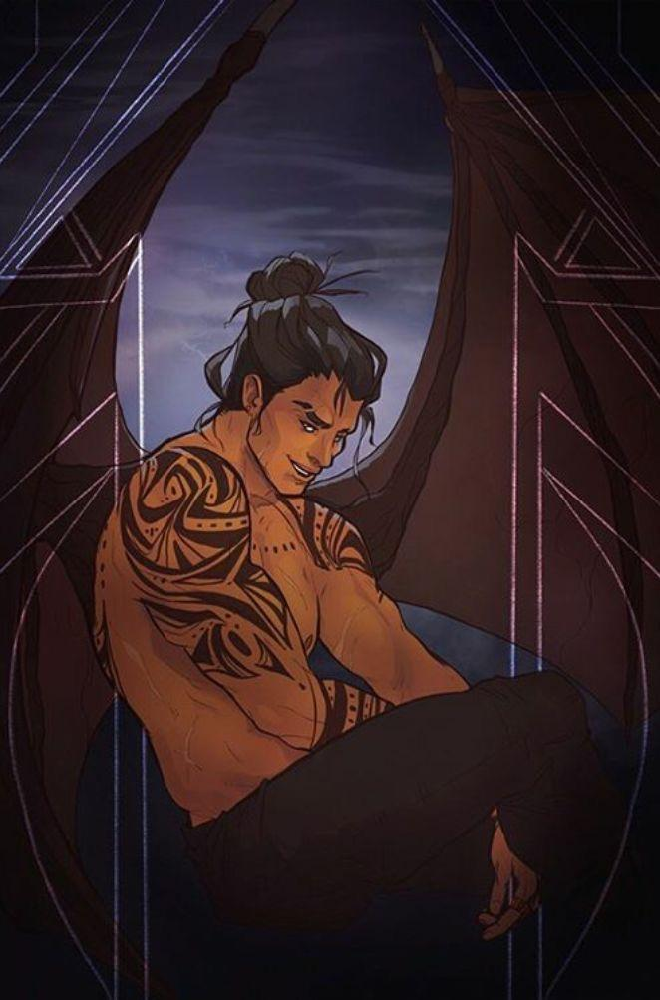
Amigo de infância, guerreiro e membro do círculo íntimo de Rhysand, Cassian é um dos illyrianos mais poderosos que já existiu. Os guerreiros Illyrianos geralmente usam um Sifão para canalizar seu poder natural em algo útil, no entanto, Cassian precisa de sete pedras vermelhas, então fica subentendido seus títulos. Cabelos sedosos na altura dos ombros, alto, forte e muito provocador, é conhecido pelos fãs como um personagem “100% brasileiro”. Filho bastardo, foi enviado aos campos illyrianos muito cedo, não tendo infância e nem oportunidades como crianças deveriam ter, mas ganhou o mais próximo ao conhecer Rhysand e viver com este e sua mãe, que cuidava de si como se fosse filho dela. No quinto livro é explorado mais a parte sentimental dele, enquanto desdobra um romance com Nesta Archeron.
Nesta Archeron
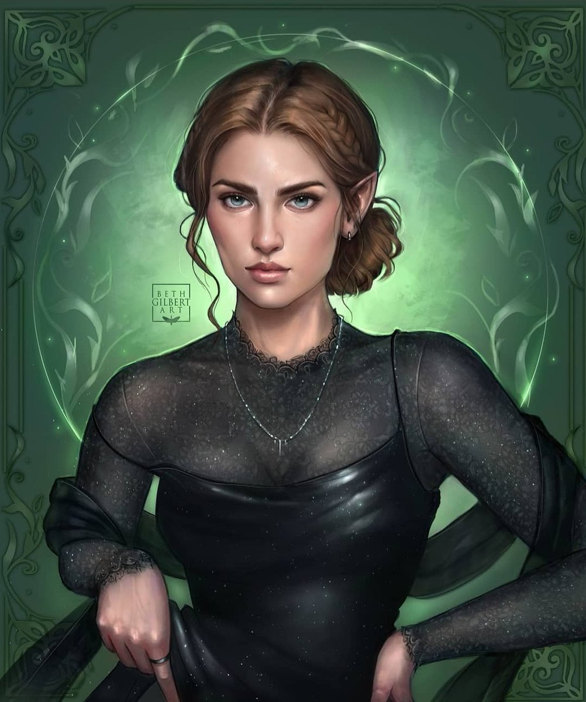
Irmã mais velha de Feyre, sempre teve uma aversão a tudo que significava ser feérico. Ao ser forçada a entrar no Caldeirão e se tornar uma deles no segundo livro, entrou dentro do nada e roubou do Caldeirão um pedaço da sua essência, tornando-se assim morte triunfante. Sua presença emana raiva e astúcia, por isso, não se envolve facilmente com o seu grupo de “amigos”. Feyre descreve-a como alguém que sente tanto que precisa proteger seu coração através da camada de raiva que havia construído desde a morte de sua mãe. Apesar de suas ações cruéis e comportamento sempre defensivo, mostra-se amável e protetora com Cassian no quinto livro, quando eles enredam um romance difícil. É muito apegada a livros, por mais que não deixe ninguém achá-los e surte de vergonha quando Cassian comenta dos conteúdos que ela lia.
Azriel
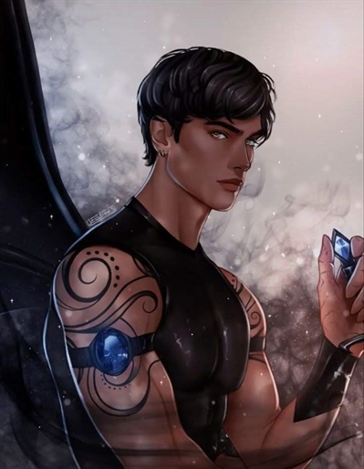
Encantador de Sombras, mestre-espião de Rhysand, outro dos illyrianos mais poderosos de Prythian e com uma envergadura incrível, Azriel pode não ter tantos momentos de diálogo mas sua presença é reconhecida em qualquer parte por qualquer um. Após ser mantido em cativeiro durante onze anos, Azriel desenvolveu a capacidade de falar com as sombras. Quando estava com 8 anos, os meio-irmãos decidiram que seria divertido ver o que acontecia quando se misturava os dons de cura rápida de um illyriano com óleo e fogo em seu corpo, provocando cicatrizes permanentes no macho. Quando conheceu Cassian e Rhysand nos campos illyrianos, aprendeu tudo que foi proibido a ele desde nascido e voltou para vingar-se dos seus familiares um por um. Mesmo sendo sério, sombrio e com uma história trágica, é amado pela maior parte dos leitores.
Elain Archeron
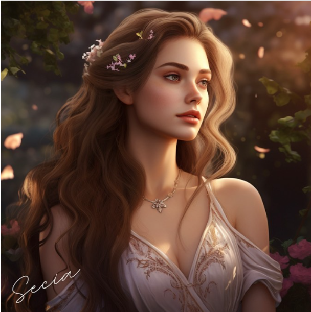
Segunda irmã mais velha de Feyre, é a mais bela das irmãs Archeron. Quando foi forçada a se transformar em feérica através do Caldeirão, foi achada tão bela pelo vazio que presenteou-a com sua beleza de alma. Pratica muita jardinagem, nunca faz nada que provoque o ódio em quem a rodeia. Pode até ser ingénua e carinhosa, mas age de forma ignorante com Lucien, seu parceiro, e parte dos fãs acha “forçado” a intimidade que tenta ter com o encantador de sombras. De qualquer forma, é das personagens mais simples e não tão importantes durante a história.
Morrigan
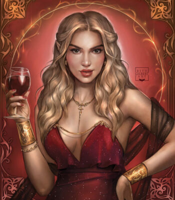
Terceira do comando da Corte da Noite e emissária da Corte dos Pesadelos e Corte dos Sonhos, Morrigan é prima de Rhysand que foi aceita em seu círculo íntimo após ser mandada em casamento contra sua vontade, se tornar indigna e ser destratada por seu pretendente antes de ser devolvida, com uma placa pendurada em seu corpo. É quase sempre vista com vestidos vermelhos elegantes e é conhecida fora da Corte por seu dom da verdade. No fim do terceiro livro, confessa ter enredado um romance com uma falecida feérica.
Amren
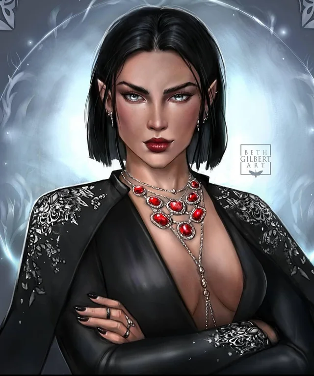
Não há dúvidas de quem é o ser mais poderoso de toda a saga. Amren é ex-detenta e a imediata de Rhysand, sendo uma criatura de origem desconhecida presa num corpo de Grande Feérica. A única coisa que se sabe é que ela é mais velha que a origem de Prythian, tendo entrado para o mundo dos Feéricos vinda de um reino diferente e ficando presa nele quando a fenda que ela atravessou se fechou sem motivo aparente. Amren bebe sangue para sobreviver e coleciona jóias caras e outros pertences valiosos, ameaçando um castigo terrível e mortal contra quem tentar roubá-los. Mesmo assim, nota-se que consegue ser amável ao oferecer uma de suas jóias para Feyre entrar na prisão e, no terceiro livro, sacrifica-se para acabar com a infinidade de exércitos Hyberianos, sendo assim liberada para sua forma original - mas posteriormente volta, infelizmente como uma feérica normal e sem seu poder total.
Amarantha
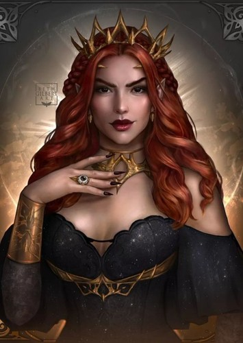
É a principal antagonista do primeiro livro. Ela costumava ser a maior general do rei de Hybern, até sua irmã ser assassinada por seu amado humano e ela desenvolver um ódio profundo por sua espécie. Após a construção da muralha, enganou os sete Grandes Senhores de Prythian com um feitiço roubado do rei de Hybern, e assumiu o controle de Prythian em poucos dias, tomando o poder de todos ao seu controle. Todavia, era apaixonada por Tamlin. Ela poderia ter voltado atrás no castigo a Prythian, se Tamlin não tivesse dito que até mesmo sua irmã preferia uma companhia de Mortal à dela, mas com isso, amaldiçoou toda a Corte da Primavera a ficar com uma máscara sob seu rosto durante 49 anos e deu esse prazo para que Tamlin encontrasse um mortal que livremente confessaria seu amor por ele, embora este devesse originalmente abrigar uma profunda desconfiança e ódio pelos feéricos, indo tão longe a ponto de matar um deles a sangue frio sem ser atacado. Mesmo se cumprindo no último ano, conseguiu enganar Feyre e matá-la, mas mesmo no seu suspiro final, a humana desvendou o enigma que tinha sido proposto a “libertá-los [Prythian] de imediato” assim que fosse desvendado. Embora morta, continuou assombrando os sonhos dos sobreviventes ao seu espetáculo de horrores em Sob a Montanha, como Feyre, Tamlin e, principalmente, Rhysand, que foi abusado durante todo esse tempo.
Ianthe
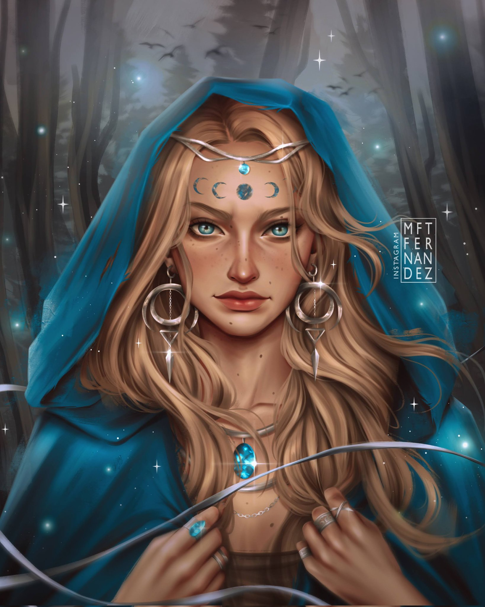
Uma das Grandes Sacerdotisas mais novas e amiga de infância de Tamlin, Ianthe aparece no segundo livro após se refugiar em Hybern com o objetivo de servir ao Grande Senhor. Foi muito próxima de Feyre e conseguiu guardar informações importantes sobre a família desta para, depois, usar em seu favor. Era conhecida por ter relações com muitos machos, mas depois foi descoberto que a maioria fora sem o consentimento dos mesmos, como no caso de Lucien. Ao ser testemunhada por Feyre a tentar seduzir Lucien contra sua vontade no segundo livro, tem a mão totalmente quebrada e maldição que foram logo retirados por outros daematis, porém, no livro posterior, ao perseguir a Grande Senhora, acaba por ser presa dentro da casa da Tecelã do Bosque, onde finalmente e massivamente é assassinada.
Rei de Hybern
É o governante da ilha de Hybern e principal antagonista do segundo e terceiro livros. Ele se aliou às Rainhas Mortais e à Corte Primaveril para travar uma guerra contra o resto dos Prythianos em uma tentativa de recuperar os territórios humanos para os Grão-Feéricos, a quem ele considera superiores aos mortais por direito. No segundo livro, ao se alinhar com Tamlin e obter o Caldeirão, faz uma prova dos poderes do artefato histórico para as Rainhas ao transformar Elain e Nesta Archeron em feéricas através do mesmo. Ao reunir exércitos durante séculos e com alianças e o Caldeirão em suas mãos, o rei parte para proclamar Prythian como sua no terceiro livro, quase conquistando o poder de todas as Cortes, porém morre decapitado pelas irmãs recém-Feitas. Mesmo assim, ainda sobrou uma infinidade de exército Hyberiano que morreu no segundo imediato a libertação de Amren do seu corpo feérico.